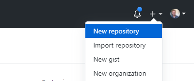
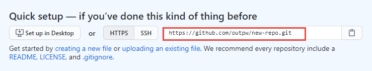

So you want to get fancy?
I get it!
Recommended Workflow:
First, install Ruby and Jeckyll.
- Also recommended: Bundler. If you’ve installed Ruby and Jekyll following the instructions linked above, you should be able to install bundler with the following command:
gem install jekyll bundler -
You’ll also want a good text editor…
- Now, find a theme you like, go to it’s GitHub repository then…
Step 1
Clone the repo down to your local machine. From your terminal:
git clone https://github.com/pages-themes/hacker.git
Step 2
Since you’ve installed Ruby, Jekyll, and Bundler, you can spin up your site locally with the following command:
bundle exec jekyll serve
Now you’re serving your site on your own computer! My default server address is http://127.0.0.1:4000, but check your prompt and it should tell you. Just open up your browser and go to that address.
Step 3
Now do whatever you want!
- Rather than the simple site we used in the hands-on example, this site has everything, including all of the styling.
- The styling is found in the
_sassandassests/cssfolder. - But note that this is not your standard CSS style sheet, most of the styling is managed by SASS.
- Open it up in your favorite text editor and don’t forget to Have Fun!
Publish your site!
Once you’ve finished going to town on your snappy website (and added and committed the changes to your repo), you can put it in a remote repository on GitHub.
Step 1
Create a new remote repository on GitHub

Step 2
Copy the url of your new remote repository

Step 3
In your terminal, navigate to the folder containing your site directory/repo. Reset the remote origin to your newly created GitHub repository:
git remote set-url origin https://github.com/your-user-name/your-repo.git
Step 4
Now push your changes up to the remote repository:
git push origin main
*might also be master instead of main
Step 5
Publish your site in the repository settings as shown in previous exercise.